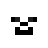

Mapa en Pantalla Completa
Al presionar la tecla del mapa de pantalla completa (de forma predeterminada, la tecla J), puede abrir el mapa en pantalla completa.
{kind=link}
El mapa en pantalla completa es una vista desplazable y personalizable de todo lo que has explorado en tu mundo hasta ahora. Proporciona acceso a una gran variedad de opciones que se tratarán a continuación, pero también puede personalizarlas en la configuración de pantalla completa.
Uso Básico
Una vez que tenga abierto el mapa en pantalla completa, puede desplazarse y hacer zoom, o usar los botones alrededor del borde de la pantalla para cambiar varias opciones y acceder a diferentes partes del mod, incluida la configuración. Estos son los controles básicos:
- Haz clic y arrastra el mapa para desplazarte.
- Utilice la rueda del ratón para cambiar el nivel de zoom.
- Haga doble clic en un bloque para crear un punto de ruta
Las siguientes combinaciones de teclas están disponibles y se pueden cambiar en las opciones de Minecraft:
- C Copia las coordenadas del bloque al que apunta tu cursor en el cuadro de chat
- B Crea un punto de ruta en el bloque al que apunta el cursor
- O Abra el administrador de configuración de JourneyMap
Botones
Alrededor del borde del mapa de pantalla completa hay un conjunto de botones que puedes usar para personalizar la vista del mapa de pantalla completa y acceder a otras áreas del mod. Los iconos pueden diferir según el tema; Los iconos a continuación provienen de los temas incluidos con JourneyMap.
Botones Superiores
| Icono | Descripción |
|---|---|
| Cambia el mapa al modo diurno. | |
| Cambia el mapa al modo nocturno. | |
| Cambia el mapa al modo topográfico. | |
| Cambia el mapa al modo cueva. | |
| Cambia entre capas cuando estés en modo cueva. |
{kind=link}
{kind=link}
| Icono | Descripción |
|---|---|
| Alternar visibilidad de los monstruos. | |
| Alternar visibilidad de animales. | |
| Alternar visibilidad de mascotas. | |
| Alternar la visibilidad de los aldeanos. | |
|  | Alternar la visibilidad de otros jugadores. |
{kind=link}
{kind=link}
{kind=link}
| Icono | Descripción |
|---|---|
| Alternar la visibilidad de la cuadrícula. Mantenga presionada la tecla Shift y haga clic para cambiar la configuración de la cuadrícula. |
|
| Alternar la visibilidad de las combinaciones de teclas. |
{kind=link}
Botones Superior Derecha
| Icono | Descripción |
|---|---|
| Cierra el mapa en pantalla completa. | |
| Obtenga la última versión de JourneyMap. |
{kind=link}
{kind=link}
Botones Izquierdos
| Icono | Descripción |
|---|---|
| Abra el buscador de ubicaciones. | |
| Centra el mapa en tu personaje. | |
| Acercar. | |
| Alejar. |
{kind=link}
Botones Inferiores
| Icono | Descripción |
|---|---|
| Abra el administrador de puntos de ruta. | |
| Abra el administrador de configuración. | |
| Abra la pantalla Acerca de. | |
| Abra el mapa web, si está habilitado. | |
| Recorra los temas disponibles. | |
| Restablecer la paleta de colores. | |
| Elimina el mapa en una o más dimensiones. | |
| Guarde el mapa completo en un archivo. | |
| Mapea el mundo explorado, en un jugador. | |
| Activa y desactiva el mapeo. |
{kind=link}
{kind=link}
{kind=link}
{kind=link}
{kind=link}